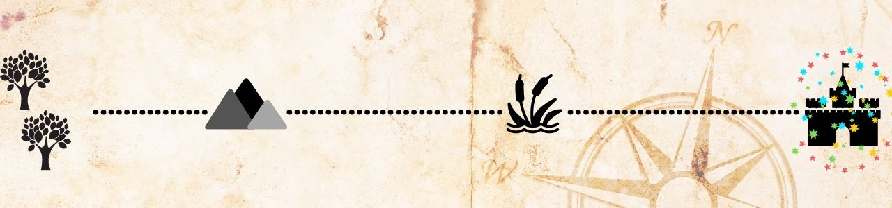

A Grande Marcha para o Oeste
O grupo chegou ao Oeste com muita luta e habilidade. Foram recebidos em sua nova casa e assim que se estabeleceram, Ingwe enviou algumas instruções para os grupos que ficaram na Grande Floresta.
Volte para escolher novo personagem
